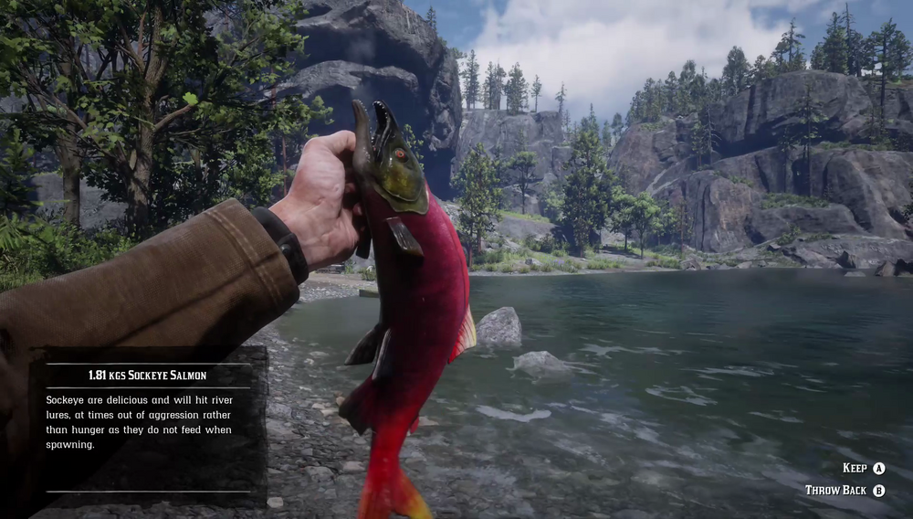

Sockeye Salmon can sometimes be seen leaping upstream in their habitat of fast-flowing, cold river water. These hefty fish are sought after for their tasty, nutritious flesh. Choosy about bait, Sockeye Salmon will ignore food-baited bobbers, but can be tempted by River Lures. They are known to be more active when the weather is overcast. The remote, freezing territory at the foot of the Western Grizzly Mountains is rumored to be home to a whopping Legendary Sockeye Salmon.
Grizzlies West, Dakota River, Big Valley, Grizzlies East, Kamassa River.
